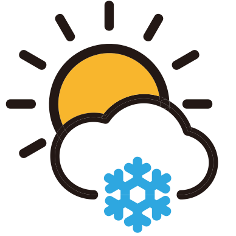

Purpose
This site is dedicated to the information of todays current weather. Users who wish to see a daily update of their week can visit here and aquire that information likewise. The content of the site includes updated images of your county and state along with a news report from your local weathermen.
Domain
This is the domain used to link to the site
Link to the siteLogo
This is the logo that will be used for the site